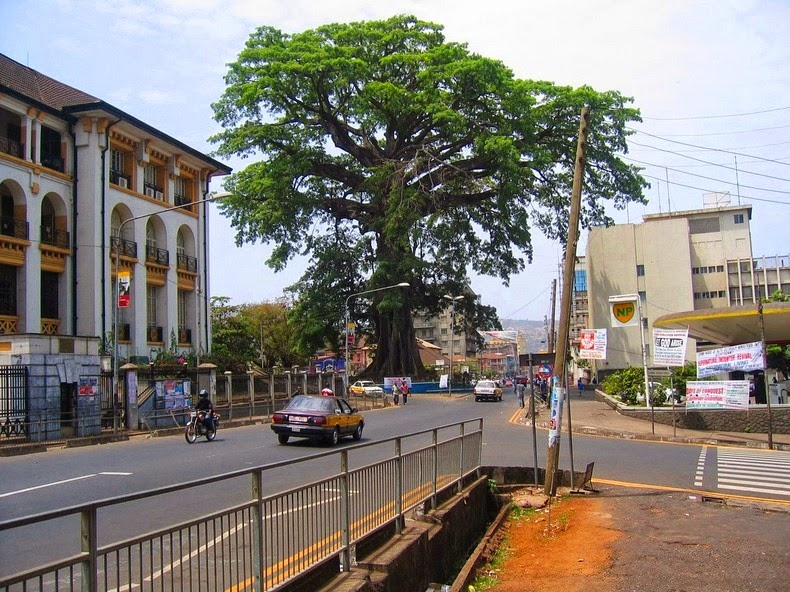
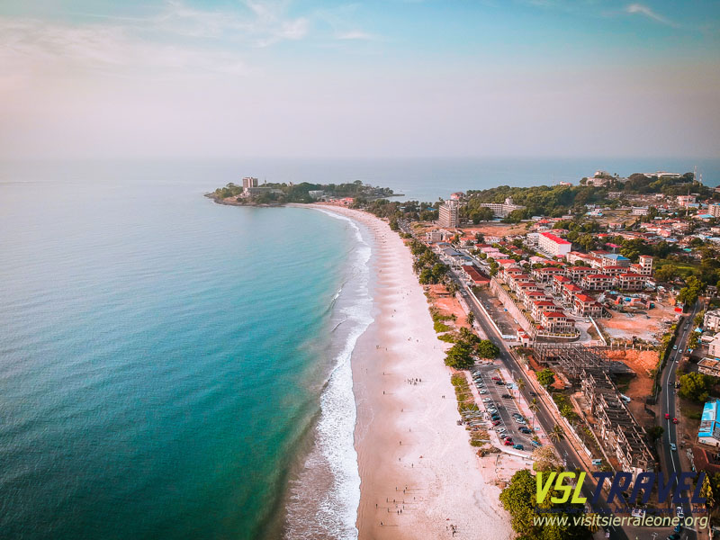
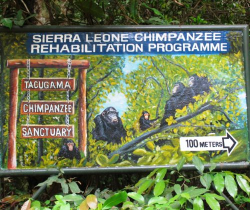

Cotton Tree

The historic Cotton Tree is one of the most important landmarks in Freetown. It symbolizes freedom and the founding of the city.
The Heart of Sierra Leone
Freetown is the vibrant capital city of Sierra Leone, located on the Atlantic coast of West Africa. Founded in 1787 as a settlement for freed slaves, the city has a rich historical and cultural heritage.
Today, Freetown serves as the political, economic, and cultural center of the country. It is known for its beautiful beaches, mountains, and welcoming people.

The historic Cotton Tree is one of the most important landmarks in Freetown. It symbolizes freedom and the founding of the city.

Lumley Beach is a popular destination for relaxation, entertainment, and social gatherings. Visitors enjoy the ocean breeze and vibrant nightlife.

Located in the Western Area Peninsula, this sanctuary protects endangered chimpanzees and promotes wildlife conservation.
Freetown offers unique experiences that make it worth visiting:
Visiting Freetown is not just about sightseeing; it is about experiencing resilience, culture, and natural beauty all in one place.
"The world is a book, and those who do not travel read only one page." – Saint Augustine
"Freedom is never given; it is won." – A. Philip Randolph